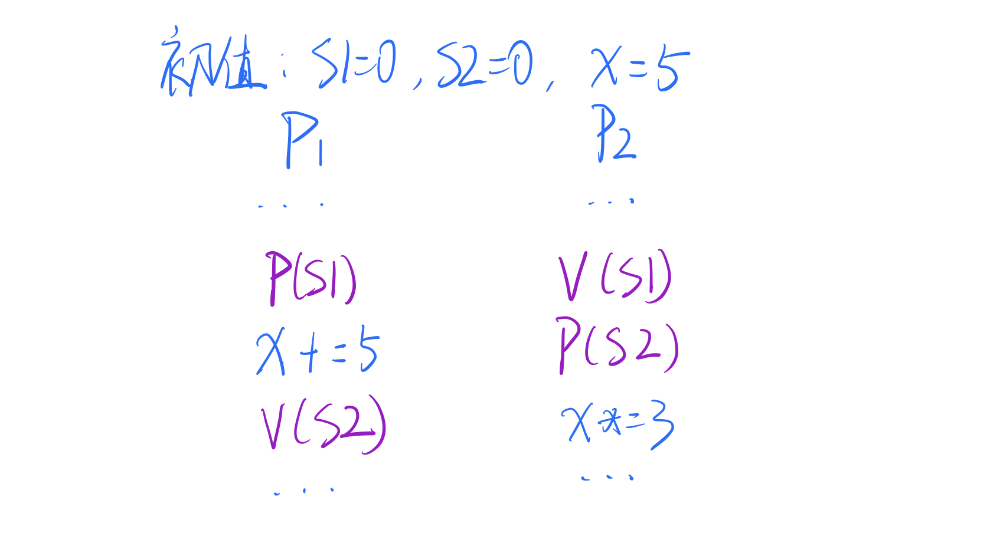
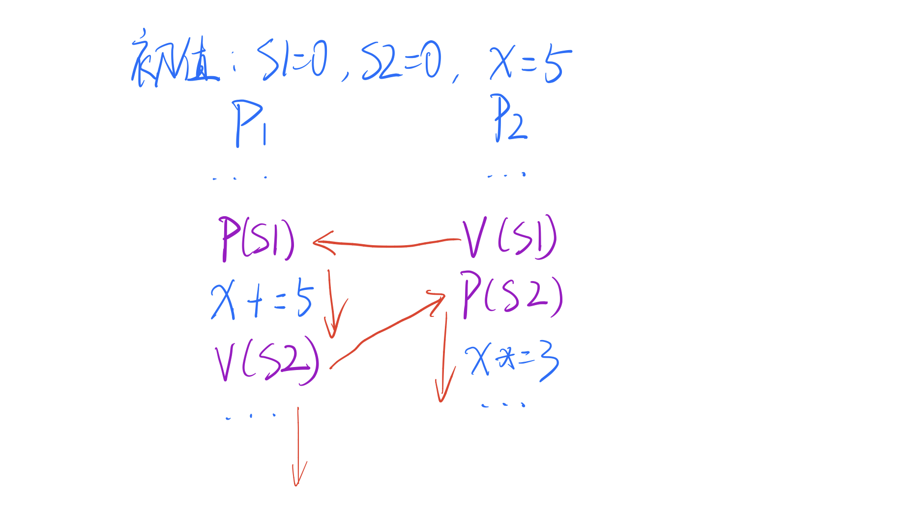

“我找到好办法了！”
没有想到，说话的人竟然是磁盘！
进程调度器瑟瑟的说：“你有方法？还是算了吧，我怕用你的方法操作系统要乱套了。”
磁盘委屈的道：“不就是刚刚冤枉你了吗，这么小气干什么！再说了，这个方法不是我想出来的，是我从文件里找到的。”
操作系统挑了挑眉毛：“哦？你找到什么文件了，让大家也瞅瞅？”
磁盘嗡嗡的转起来，很快就把文件取出来了。
“当当当当~ 这可是大师 Dijkstra 的论文，他引入了一个全新的变量类型——信号量（semaphore）。然后还为信号量设置了两种操作，P（proberen，检测） 和 V（verhogen，增量） 。”
”说清楚点啊，信号量是怎么个用法啊？“进程急切的问道。
“别急，让我接着看。。。Dijkstra 提出，P操作是检测信号量是否为正值，如果不是，就阻塞调用进程。 V操作能唤醒一个阻塞进程，让他恢复执行 。具体点的话就是这样： “
// S 为信号量
P(s):
{
S = S - 1
if (S < 0)
{
调用该 P 操作的进程阻塞，并插入相应的阻塞队列；
}
}// S 为信号量
V(s):
{
S = S + 1
if (S <= 0)
{
从等待信号量 S 的阻塞队列里唤醒一个进程；
}
}内存仔细看了代码，说：”这个实现也要求是原子操作诶，Dijkstra 这个方法很有趣啊。“
进程蒙圈了：“我怎么完全看不懂啊？内存你给我讲讲呗。”
“好，我就用最简单的一组线程举例子了：
// 线程 A，B，C , S = 1
...
P(S) //S = S - 1 若 S < 0 ,阻塞等待
购票操作
V(S) //S = S + 1 若 S <= 0, 表明有线程阻塞了，得唤醒其中一个
...这里的 「购票操作」 就是我们要保护的临界区，我们要保证一次只能有一个线程进入。那我们就把 S 的初始值设为 1 。当线程 A 第一个调用 P(S) 后，S 的值就变成了 0 ，A 成功进入临界区。在 A 出临界区之前，线程 B 如果调用 P(S)， S 就变成 -1 ，满足 S < 0 的判断条件，线程 B 就被阻塞了。等 A 调用 V(S) 后，S 的值又变成 0 ，满足 S <= 0，就会把线程 B 唤醒，B 就能进入临界区了。“
进程恍然大悟：“原来是这样，看起来和二元锁差不多啊，但是不用忙等待了。”
内存神秘一笑：“信号量能做的可不止这些，你想想看，要是我把 S 的初始值设为 2 ，会发生什么？”
“一次能有两个线程访问临界区！”进程这次反应快多了：“也就是说 S 的初始值可以控制有多少个线程进入临界区，太厉害了！”
tobe 注：从信号量的值能看出还有多少个进程能进入临界区，如果为负数，表明有 x 个进程因为调用 P(S) 而被阻塞
“没错，所以说信号量是一个很灵活的并发机制。而且信号量还有另一个厉害的用处：

你看这两个进程有什么特别的地方？“
“emmmm，这个嘛，进程 P2 的 V 操作居然放在 P 操作的前面，而且两个操作的信号量还不是同一个。”
“没错，这样使用信号量，能让两个进程做到同步。你看，如果 P1 运行到 P(S1)，他是不是会阻塞？”
进程认真一看，说：“没错诶，S1 初始值是 0，P1 肯定得停在这一句。让我再看看，，，如果 P1 想接着运行，就得等 P2 调用 V(S1) 把他唤醒。”
“是的，这就是同步——运行快的 P1 必须在这里停下来等 P2 运行到指定位置。两个进程的执行顺序就是这样：

也就是说 x 最终的值必然是 30，而不可能是 20。在信号量的帮助下，这两个进程达成了同步。“
进程由衷的感叹：“信号量实在是太强大了！咱们以后就用信号量来解决互斥的问题吧！”
tobe 注：在 Linux 里提供了信号量和互斥量（也就是二元锁）这两种主要机制实现互斥，不过 Linux 的信号量功能要比文章里讲得复杂得多，「UNIX 环境高级编程」这本书里写到「。。。三种特性造成了这种并非必要的复杂性」，对于一般的互斥操作，还是建议使用互斥锁（当然是阻塞而非忙等待）。稍微复杂点的锁还有「读写锁」，以后有机会再讲吧~
觉得我写的还不错的话，就点个赞吧！